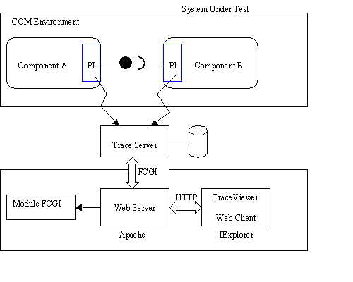

The trace viewer combined with the trace server, part of the openccm module, represents a web enabled test environment that can be used to visualize execution traces between CORBA objects within a CCM context. The application is designed as part of the COACH IST project. The next figure shows a simplified schematic of the architecture:

More information about the test environment can be found in COACH deliverable D2.7 Specification of the component test environment
The trace viewer is designed and tested on the following platform:
There are two configuration files that need to be modified in order for the trace viewer to work. The first one is the fcgi.conf file that can be found in the trace viewer /conf subdirectory. The second one is the httpd.conf file which is part of the Apache installation. The latter can be found in the Apache /conf subdirectory.
fcgi.conf file - The trace viewer will be part of a web server and communicates with the trace server using FCGI (persistent version of CGI). The fcgi.conf file is needed for the web server to load the FCGI module, to be able to connect to the trace server, and to find the trace viewer web files. The file must be modified to point to the location where the trace viewer files are installed. It also specifies where the trace server is running (hostname and port).
Note: The fcgi module library can be found in the trace viewer /lib subdirectory. It is a pre-build version for Apache running on a WIN32 machine. If you want to run the Apache server on a machine with a different operating system then you need to build the library yourself. The source code and documentation can be found on the fcgi home page.
httpd.conf file - The Apache web server must load the fcgi.conf file so it needs to be included at the end of the httpd.conf file which can be found in the Apache /conf subdirectory. This is how the include should look like:
Include "<absolute trace viewer path>/conf/fcgi.conf"
To test the trace viewer you need to build and install the OpenCCM environment including the COACH test applications (trace server/service). There is a separate target build coach that will build the OpenCCM code and the COACH software.
Apache - After the configuration files are correctly modified you should be able to (re)start the web server.
Browser - The next step is to start the web browser (IExplorer 5.5+) and type in the URL pointing to the trace viewer
http://<hostname>[:port]/coach/tracingIn case your machine does not have an installed Adobe SVG ActiveX control (version 3.0), you will be redirected to the Adobe SVG install page. Now you should install the SVG plugin on your machine. After the plugin is installed you will see the trace viewer HTML page which has 5 page control buttons and two sliders on the left side. When you see these, you know the viewer is loaded correctly. You also get an alert message that the viewer can not find the trace server. This is ok since the server is not started yet.
OpenCCM - After you have build and installed the OpenCCM platform you should be able to start the trace server using the command 'coach_tracing_start'. The server is now ready to collect operation events. To test the trace server together with the trace viewer you could run the test program 'coach_tracing_test'. This program simulates a number of operation between CORBA components that can be monitored by the trace viewer. The result should look like follows:
The next figure shows a real life example that will be used to explain the trace viewer features. It shows the execution traces of a simple client/server application. The client sends request to the server from two different threads. This is the reason why the operation lines can cross each other, there is no causual relationship between the operations originating the two different threads. This complicates the interpretation of the results. Later on we will see how to change the graphical presentation to identify the two different threads, of which the operations both represent a sequence of causally related events (trail), more easily.
The page control panel allows the user to change the view in the horizontal as well as the vertical direction. In the vertical direction this means that the viewer will send a request to the trace server to retrieve a different portion of the operation events stored within the server database. The vertical step size, applicable to the North/South buttons, can be modified. It is defined as a percentage of the maximum number of (vertical direction) events that fit within the visible region of the view panel window.
The entity control panel shows the relationship between the entities by means of a tree view and allows the user to manage the graphical representation of those entities. Within the CCM environment this relationship is as follows:
node::process::container::component::object
It is also possible to control the visibility of the entities by clicking with the mouse on the text of a tree node. Hidden nodes show up in red. The next figure shows an example where the 'StructHandler' component of the client is hidden. As you can see this will also hide the corresponding invocations.
The operation control panel is opened by clicking with the left mouse button on the name of an operation. The panel functionality is threefold. It allows the user to filter out operation types, filter out operation to self, and filter out unmatched events. Operations to self are operations that have there start and endpoint positioned on the same time line. Unmatched events are events that have no peer event. Normally every operation has a start and endpoint represented by two related events. The next two figures show an example how to hide all the 'get_struct' operations
The return to the Entity Control panel you should position the mouse on one of the timelines and click the left mouse button.
By positioning the mouse over an event and clicking the left mouse button you can activate the event panel showing the operation parameters for that specific event. The next figure shows an example of the 'get_struct' operation reply parameters. Note that this feature only works for C++ applications. The Portable Interceptor concept for Java does not support the retrieval of parameter values. For Java applications the parameter tree will be empty.
By moving the mouse over a certain area of the view panel window and clicking the right mouse button you will activate one of the following three context menus.
The default context menu is the Adobe plugin menu that gives you for example the possibility to Zoom In or to Zoom Out. The next two figures show you what happens after a Zoom Out action. Note that the size of the tooltip panel remains unchanged so that you can still identify certain event or entity properties.
When you position the mouse over an event and click the right mouse button you can popup the Event Context Menu. This menu is used to filter out all events from the top down to the place where you activated the menu. This is very useful when the server database contains numerous (e.g. 20000) events and you no longer are interested in showing all events prior to the event on which you activated the context menu. The next two figures show what happens when you hide previous events. Note that the behavior is as if the events are thrown away at the server side. This is not the case, you can always retrieve them as you can see by looking at the second context menu item.
As already mentioned within the Viewer Users Guide introduction, the operation lines can cross each other when they are not causally related. This means they also have a different trail id (sequence of causally related events). We can use this trail id feature to give every trail a different color which simplifies the interpretation of the results. The next two figures show how to color a trail. The context menu is activated when moving the mouse over an operation line and clicking the right mouse button.